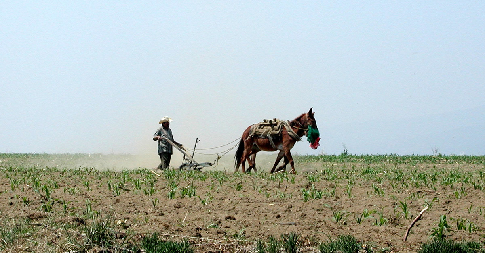

Resources
Putting Youth on the Map believes all people— including youth— should understand how to access data to inform community change. On this page click the dropdown menu or scroll down to
- Find links to other online sources of youth data and youth data maps.
- Access online tools for uploading and mapping your own data.
- Download curricula for helping youth and other grassroots advocates learn about the power of data maps to support community change.

Links
Check out other maps at the Center for Regional Change, including Putting Youth on the Map.
Civic Engagement
Education
Health
Physical and Built Environment
Transportation
Multiple Data Types
- American FactFinder is a portal to U.S. Census Bureau datasets and economic surveys. You can map the data or download it.
- Community Commons allows you to make maps with existing data, upload your own data and generate community health reports.
- ChildrenNow.org hosts the 2010 California County Scorecard of Children's Well-Being. It tracks 26 interrelated indicators of children's well-being for each of California's 58 counties.
- DiversityData and DiversityDataKids provide maps with various equity analyses.
- This interactive mapping tool allows users to locate federally supported youth programs in a community.
- HealthyCity.org provides current data, maps, and service referrals for California at many different geographic levels, including census block group and school district, on an online platform.
- Kidsdata.org includes data about the health and well being of children across California. The site offers data for every city, county, and school district in the state.
- Measure of America offers several mapping tools, including a Human Development Index and a tool for forecasting potential effects of educational improvement.
- Policy Map lets users create maps using public data layers that can be shared and saved.
We’ll periodically be updating this list, so please send additional resources to crcinfo@ucdavis.edu.
Stories
Stay tuned for updates!